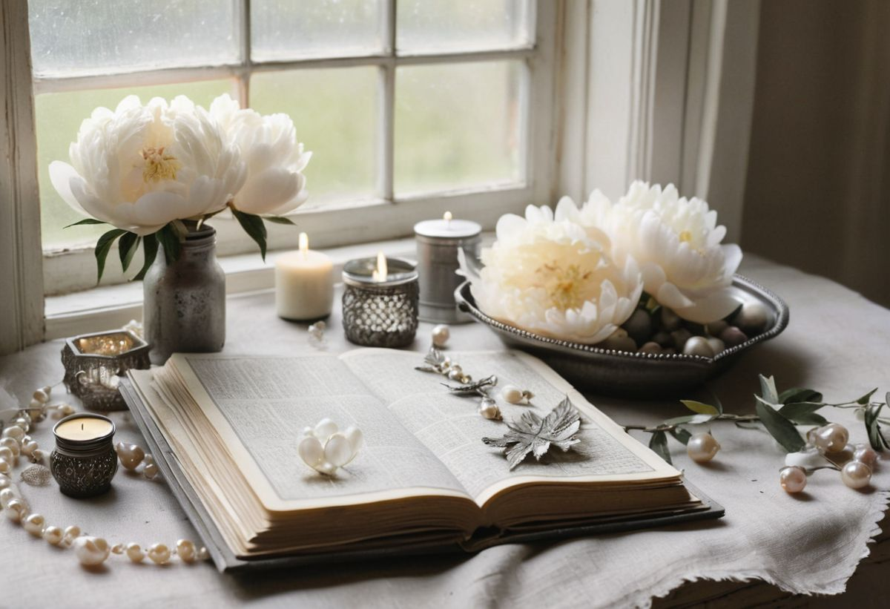
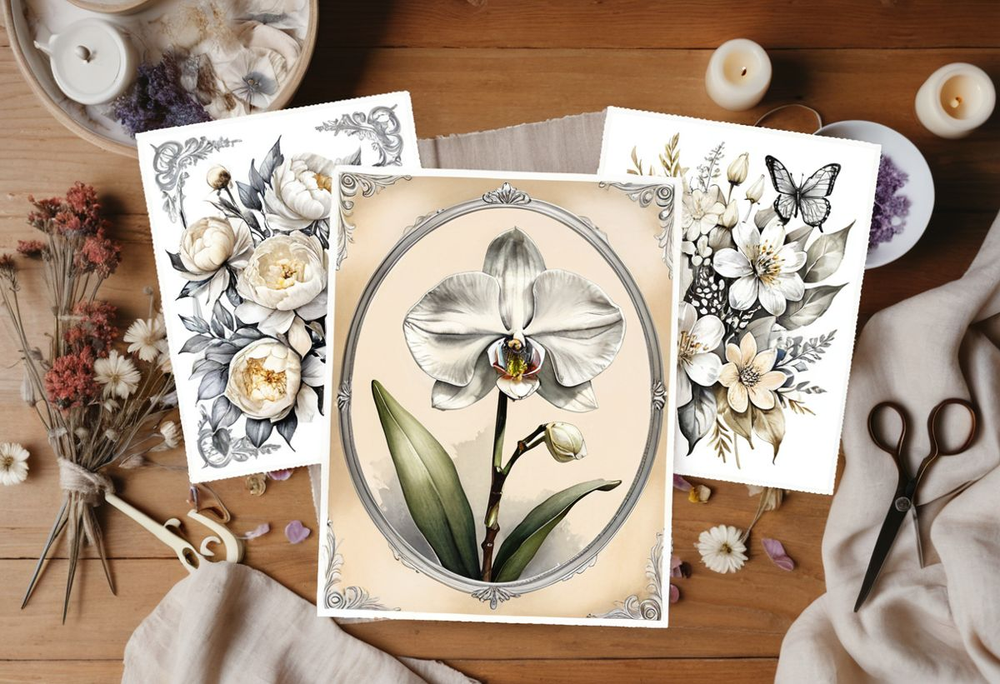
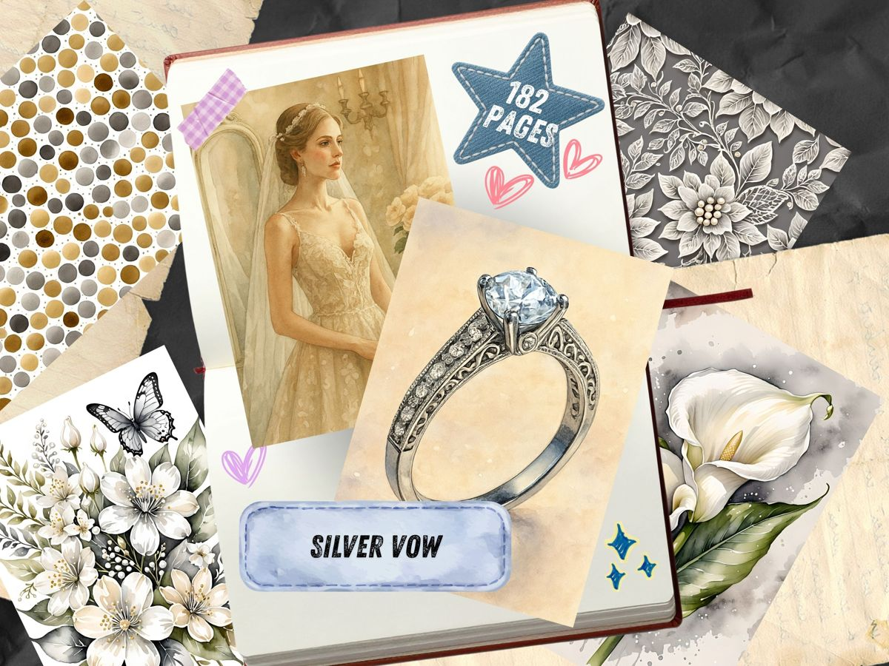
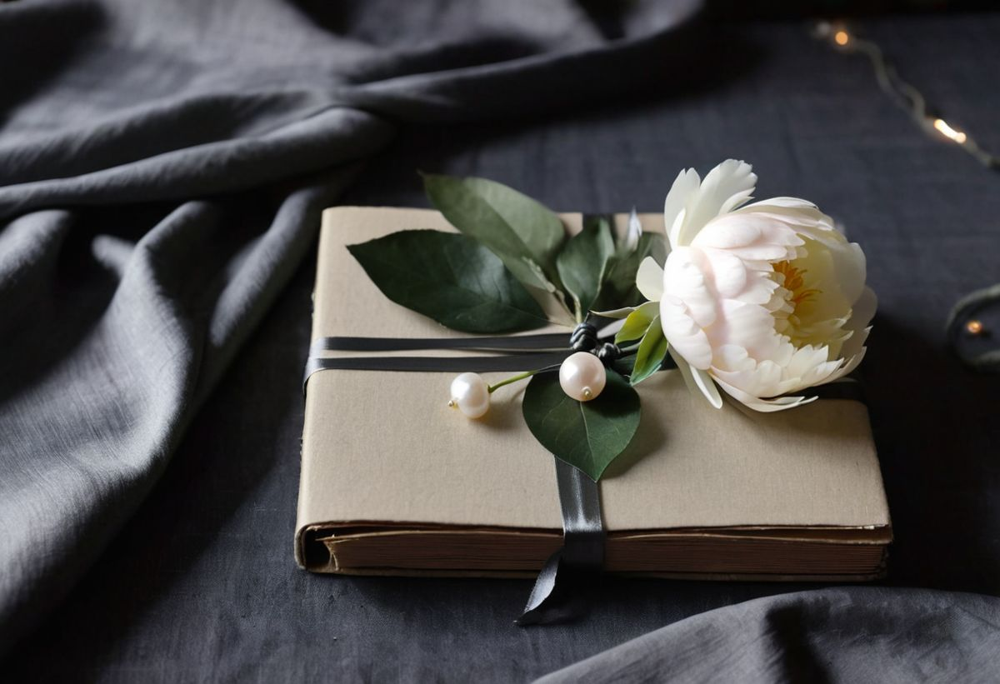

Some wedding papers arrive dressed in blush and gold, ready for the reception. This theme stays behind in the church after everyone has left — pearls still warm, candles half-burned, a bouquet resting on the front pew. We call it Silver Vow, and it is the quietest wedding collection in the studio.
The pages are watercolor, but watercolor with the saturation turned almost all the way down. Peonies and roses bloom in cream and ivory while their leaves go silver-grey, as if the whole garden were photographed by moonlight. Between the florals sit the small ceremonial things: a strand of pearls looped across old paper, an engagement ring drawn like a jeweler's study, a chapel interior with light falling through tall arched windows. There is a bride at her mirror, a couple in a silver frame, lace borders tied with pale gold bows. Nothing in the set raises its voice.

The mood, in four shades
Pull the colors from the pages and you get a palette that behaves less like "wedding" and more like "heirloom" — the shades of a jewelry box that has been in the family a while.
Antique Cream does most of the work — it is the color of the petals, the pearls, the table linen. Charcoal is scarce and precious here; it lives in the deep centers of leaves and the shadows behind the flowers, and it is the shade your handwriting should borrow. Lavender is really a soft silvered grey, the color of the veil and the foliage, and Olive keeps the whole thing from floating away by tying it back to stems and greenery.

Who this theme is for
The obvious answer is anyone making a wedding keepsake — a journal for vows, a page for the dried boutonnière, a pocket to hold the ceremony program. The set was built for that, and the chapel and ring pages give you scene-setting backgrounds that most floral kits simply do not have.
But the less obvious answer is the one we keep hearing: this theme suits people who want elegance without sweetness. Because the palette is grey-green rather than pink, the pages also work for anniversary albums, sympathy and remembrance journals, winter spreads, and any project where you want flowers that feel serious. A silver peony can hold grief as gracefully as it holds joy; that is rather the point of it.

How the pages behave together
Because everything shares the same muted register, you can combine pages almost carelessly and they will still agree with each other. A damask sheet makes a calm background; the fern and leaf pages tear into beautiful fragments for tucking behind photographs; the lace-and-bow borders are made to be cut into strips and used as edges. Save the chapel and the bride for full-page moments — they are the storytellers of the set, and they lose something when trimmed small.

Everything shown here comes from the Silver Vow collection, printable at home on whatever paper suits the project — ordinary paper for layers and tearing, cardstock for covers and tags.

One small suggestion for using it: write in charcoal or soft graphite rather than black. Black ink is a wedding guest who arrived overdressed; grey belongs to the family. And when the pages are glued down and the pearls are pressed flat, let one ribbon end hang loose somewhere — a vow, after all, is a thing that stays a little bit open.
If you would like to see how the other quiet themes in the studio behave, the rest of the journal is a slow read for a slow evening.